蘭嶼最早的名稱為「Ponso no Tao」，人之島的意思。
蘭嶼島與台東相距約49海浬，為台東縣東南方海面上的小島，面積46平方公里，舊稱紅頭嶼，因島上盛產蘭花而改稱蘭嶼。
交通只有一條全長約37公里的主要『環島公路』，全島為風化劇烈的珊瑚礁岩所圍繞，只有少數幾個海灣為沙灘，碧海藍天映照青山翠巒，天風光美不勝收。
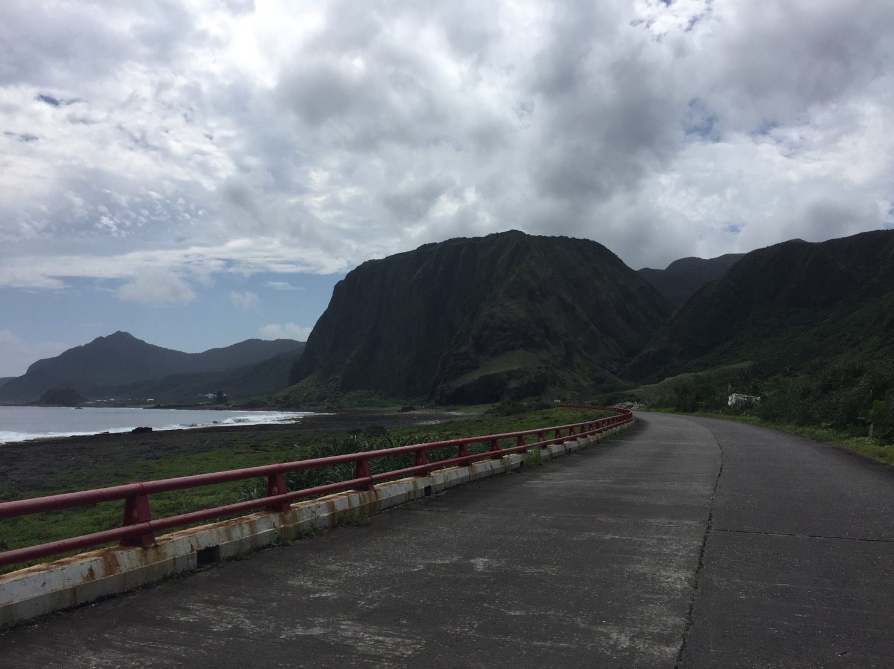
島上有紅頭、漁人、椰油、朗頭、東清、野銀等六個村落沿海而築，並由環島公路相連接，島上居民多為雅美族(達悟族)人，皆以農、漁業為生。
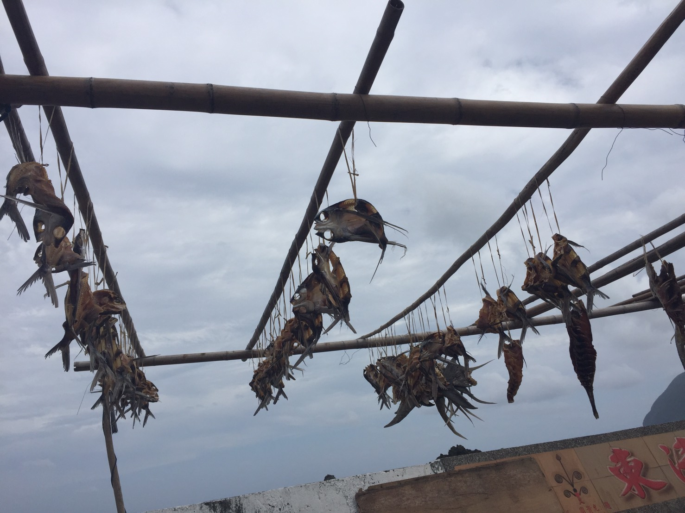
蘭嶼氣候濕熱多雨，因黑潮流經附近海域，地理環境的特殊，造就豐富珍貴的生態景觀，其獨特的人文風情，傳統祭典、造型別致的獨木舟、傳統的穴居屋等，都是珍貴的文化資產。
來此可利用幾小時的時間，由山徑登上大(小)天池觀賞那壯觀的風景，沿路可以盡情欣賞蘭嶼島上的奇花異草，感受一下熱帶林的美景，保證讓您嘆為觀止。沿途也可看雅美族人對山林資源的特殊管理方式，在樹上刻下代表某家族對此樹木的所有權標記，也是最原始的版權證明方式。
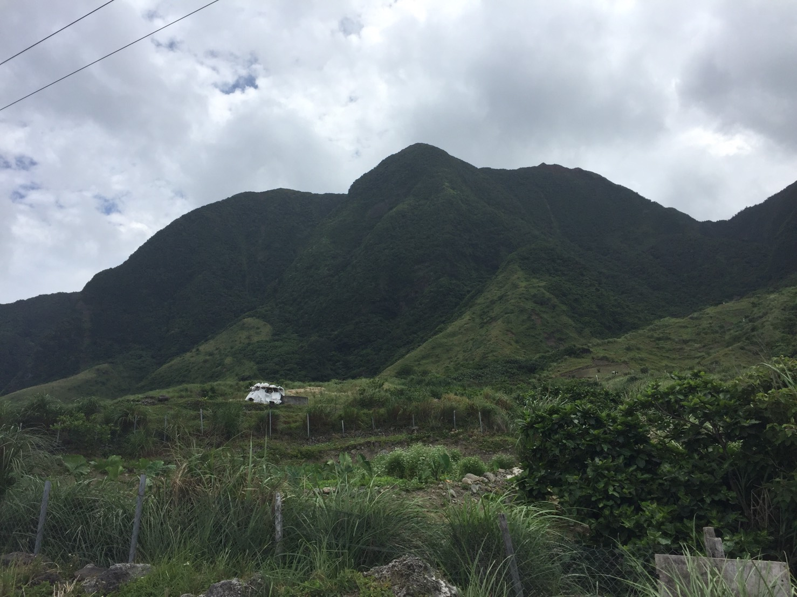
島上的動、植物生態也都非常的原始，您也可規劃夜間尋寶例如認識夜間潮間帶生物及體驗捉蟹等活動，幸運的話還可找到蘭嶼動物界的原住民例如角鴞、椰子蟹、象鼻蟲的稀有動物的蹤跡。
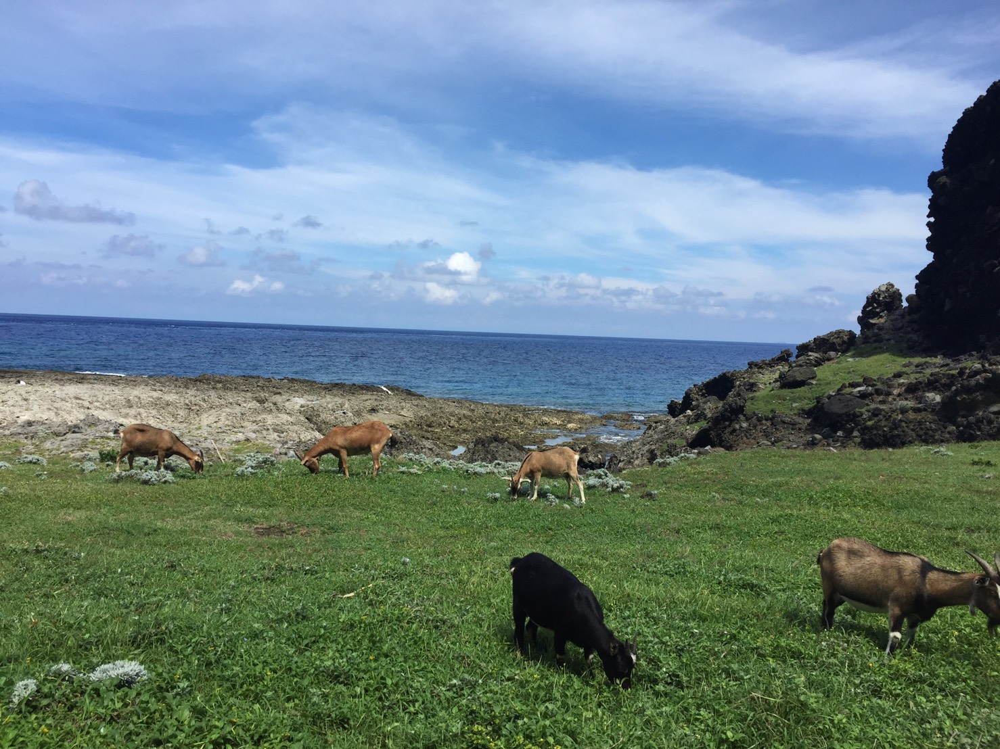
蘭嶼素有海釣者天堂之譽，經常有大型海釣比賽在此舉行，而椰油村的饅頭岩和五孔洞海域，因海底地形變化多，聚集大少螺貝魚類，更是理想的潛水活動場。每年4~6月，島上風和日麗，是最適合遊覽蘭嶼的季節。
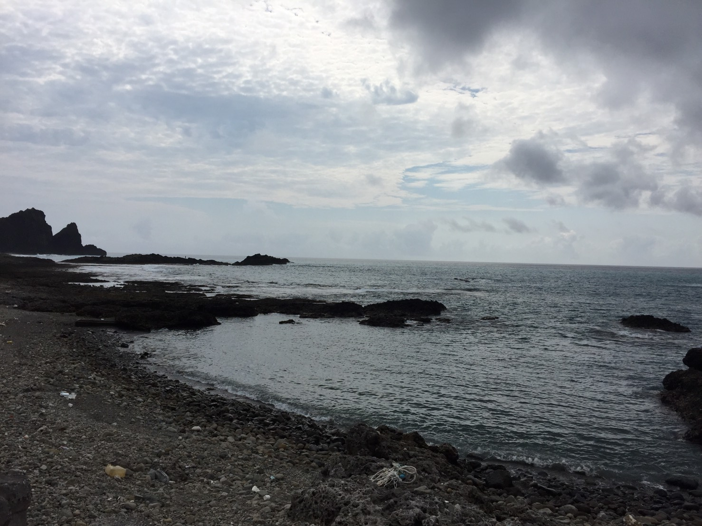
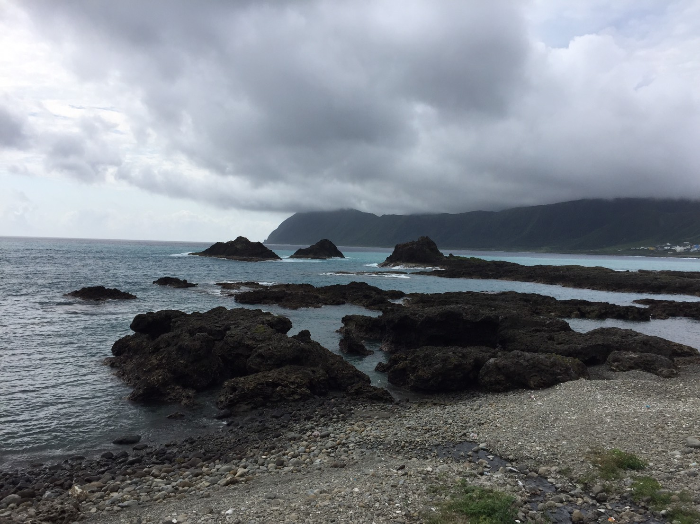
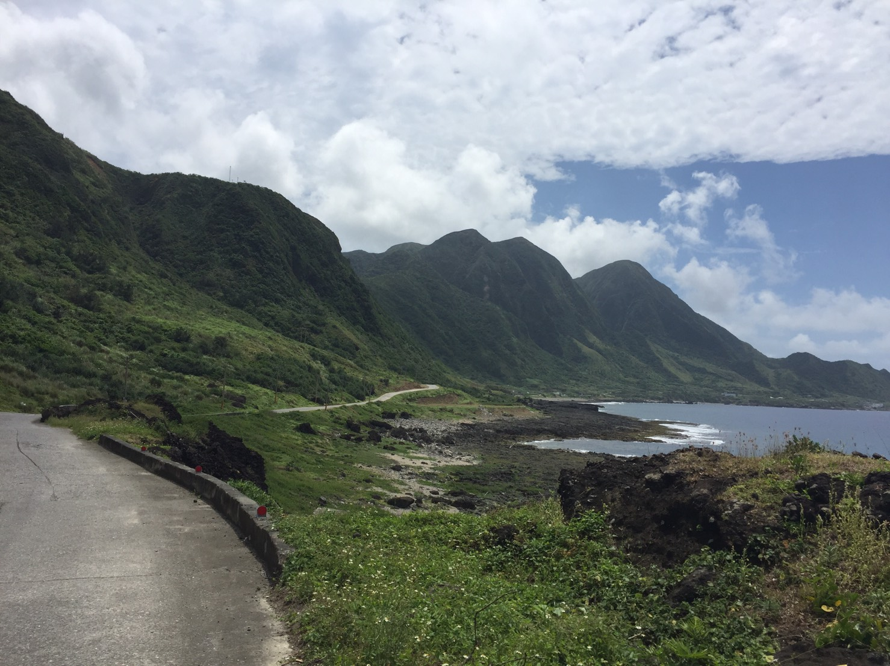
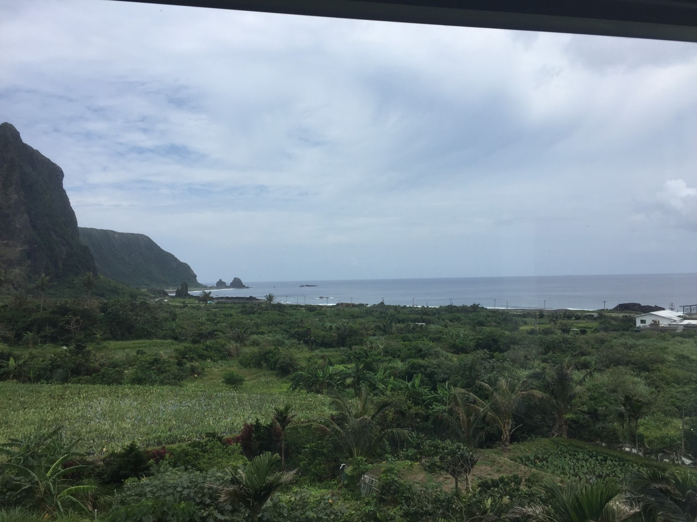
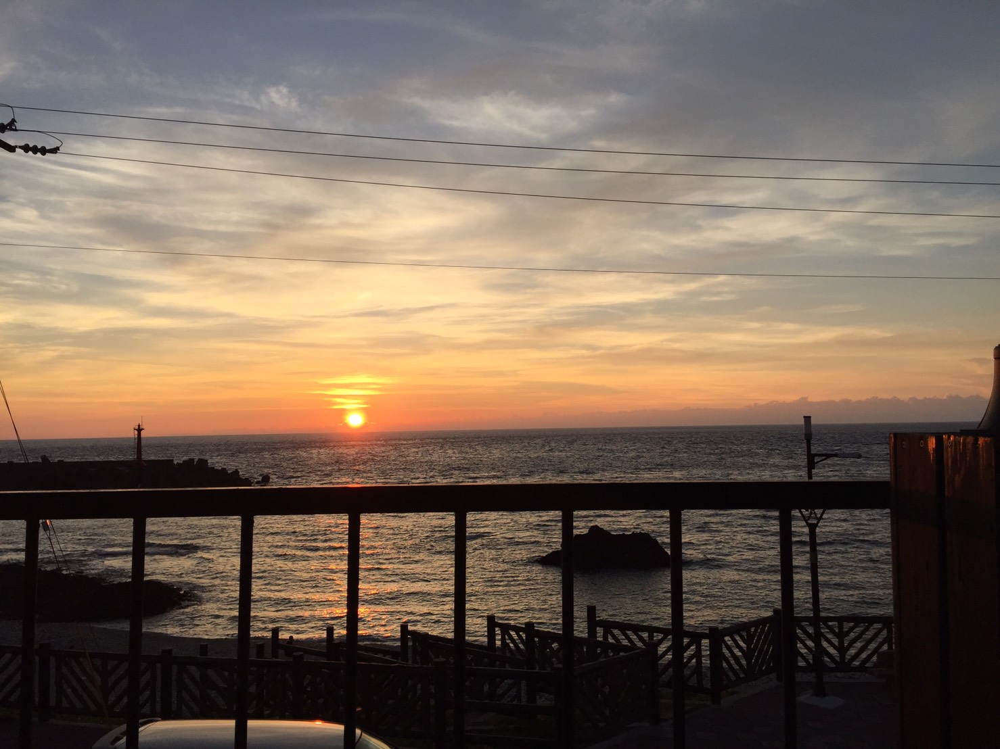
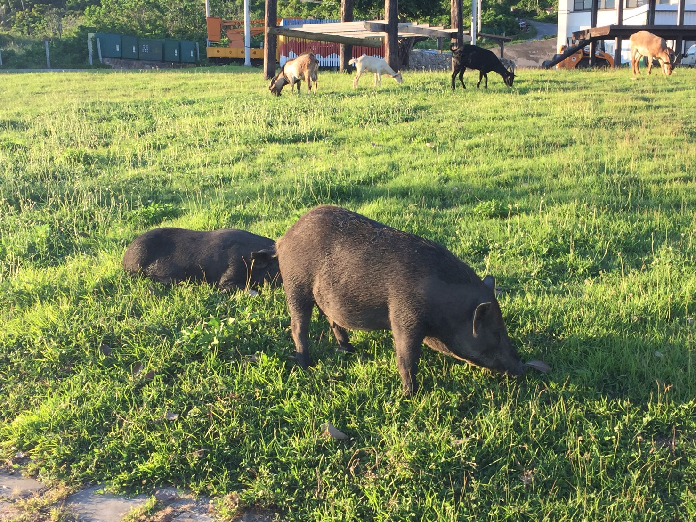
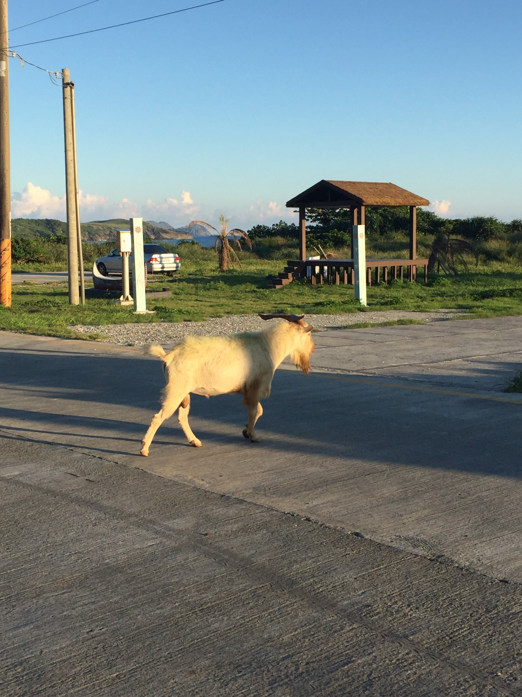
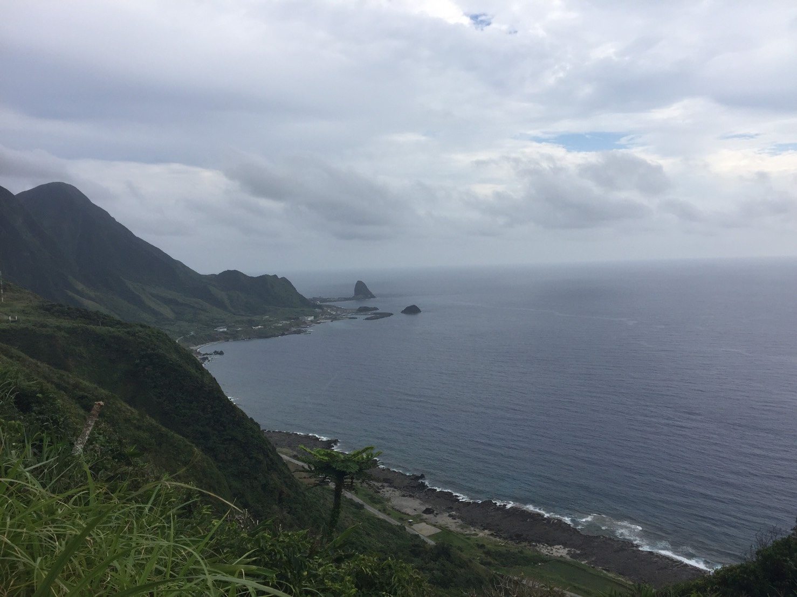
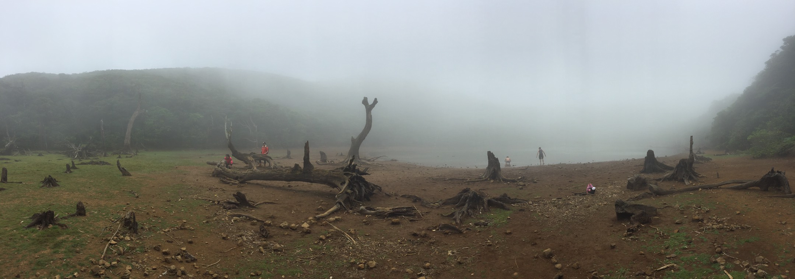
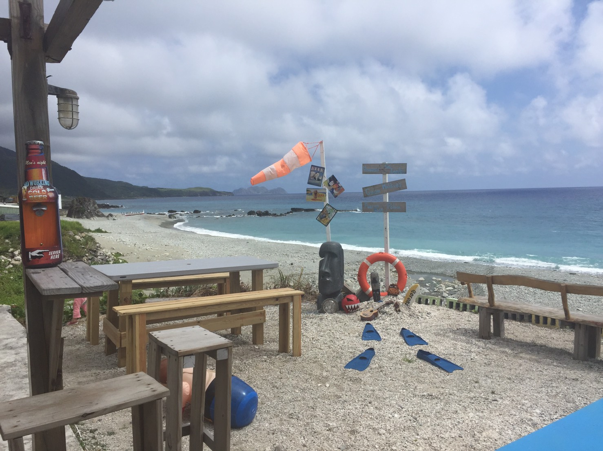